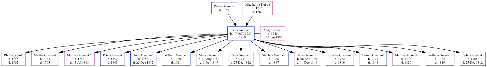

Peter Pierre Guerrant 1737 - 1819
[ Home ] | [ Surnames Index ] | [ Family History ]The child of Pierre Guerrant and Magdaline Trabue, was born in Manakintown, Goochland, Virginia, USA on Oct 17, 17371 and married Mary Perreau (with whom he had 15 children: Rhoda, Martha, Martha, Peter, John, William, Marie Magdalene, Peter, Stephen, Jane, Charles, Daniel, Martha, William and John) in Goochland, Goochland, Virginia, USA on Nov 25, 17562.
He died in 1819 in Montgomery, Kentucky, USA1.
Parents
- Magdaline was born in 1715
Children
- Rhoda was born in 1745
- Martha was born in 1745
- Martha was born in 1746
- Peter was born in 1752
- John was born in 1758
- William was born in 1760
- Marie Magdalene was born on Aug 10, 1762
- Peter was born in 1764
- Stephen was born in 1766
- Jane was born on Apr 8, 1769
- Charles was born in 1772
- Daniel was born in 1775
- Martha was born in 1778
- William was born in 1782
- John was born in 1785
Citations
- U.S., Sons of the American Revolution Membership Applications, 1889-1970 Ancestry.com Operations, Inc.
- U.S. and International Marriage Records, 1560-1900 Ancestry.com Operations Inc
Family Tree
Data (GEDCOM) maintained by Jay Weston Hannah, Omaha, Nebraska, USA.
Website generated by ged2site. Last updated on Jun 18, 2024.